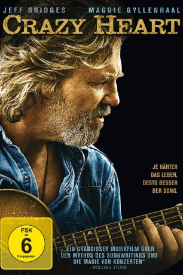

#829 Crazy Heart
Auszeichnungen: 2 Oscars gewonnen für 1 Oscars nominiert 2 GoldenGlobes gewonnen
 
 IMDB-Wertung: 7.3 / 10
IMDB-Wertung: 7.3 / 10  Metascore: 83
Metascore: 83 
Bad Blake hat nicht nur vier Ehen, sondern bald auch sein Leben hinter sich, das unaufhaltsam in die Selbstzerstörung treibt. Alkohol und Frauen sind die einzigen Konstanten, wenn der ehemalige Country-Music-Star gelangweilt durch den amerikanischen Südwesten tingelt. Als er aber Jean, Journalistin und allein erziehende Mutter, kennen lernt, verdrängt Romantik plötzlich die Routine, erlebt der Endfünfziger spätes Familienglück. Doch wie schon früher bleibt er selbst das größte Hindernis, wenn das Mögliche dauerhaft Realität werden soll.
Jahr: 2009
Dauer: 112 Minuten
FSK: 6
Land: USA Studio: Fox Searchlight PicturesTonspuren: DTS - ,
Untertitel: Deutsch,
Auflösung: 1080p (1920x816) Größe: 5734 MB
Genre: Drama, Musik, Liebe
Regisseur: Scott Cooper
Drehbuch: Scott Cooper, Thomas Cobb
Soundtrack: Stephen Bruton, T Bone Burnett
Darsteller:
 Jeff Bridges als Bad Blake
Jeff Bridges als Bad Blake James Keane als Manager
James Keane als Manager Paul Herman als Jack Greene
Paul Herman als Jack Greene Tom Bower als Bill Wilson
Tom Bower als Bill Wilson- Ryan Bingham als Tony
 Beth Grant als Jo Ann
Beth Grant als Jo Ann Maggie Gyllenhaal als Jean Craddock
Maggie Gyllenhaal als Jean Craddock Debrianna Mansini als Ann
Debrianna Mansini als Ann- Jack Nation als Buddy
- Ryil Adamson als Ralphie
- J. Michael Oliva als Bear
 David Manzanares als Nick
David Manzanares als Nick Colin Farrell als Tommy Sweet
Colin Farrell als Tommy Sweet Robert Duvall als Wayne
Robert Duvall als Wayne- Brian Gleason als Steven Reynolds
- Harry Zinn als Bartender
 Josh Berry als Security Guard
Josh Berry als Security Guard William Sterchi als Pat
William Sterchi als Pat Tina Borek als Woman in Restaurant , uncredited
Tina Borek als Woman in Restaurant , uncredited Annie Corley als Donna , uncredited
Annie Corley als Donna , uncredited- Hayley Derryberry als Fan Taking Photo , uncredited
 John H. Euber als Rehab patient , uncredited
John H. Euber als Rehab patient , uncredited J. Nathan Simmons als Tommy Sweet Roadie , uncredited
J. Nathan Simmons als Tommy Sweet Roadie , uncredited- Anna Felix als Barmaid
- Rick Dial als Wesley Barnes
- Jerry Handy als Cowboy
- Chad Brummett als Young Guy
- Jose Jacinto Marquez als Older Hispanic Man
- LeAnne Lynch als Nurse
- William Marquez als Doctor
- Richard W. Gallegos als Jesus / Juan
- Valerie Adams als Rehab Patient / Driver , uncredited
- Chris Bentley als Record Company Executive , uncredited
- Derek Blakeney als Concert Patron / Security Guard / Mall Patron , uncredited
- Cade Borek als Restaurant Twin , uncredited
- Luke Borek als Restaurant Twin , uncredited
 Steven Ray Byrd als Tommy Sweet Security , uncredited
Steven Ray Byrd als Tommy Sweet Security , uncredited- Chad DeGroot als Roadie , uncredited
- Jeffrey Feingold als Dirk - Singer , uncredited
 Cliff Gravel als Studio Executive , uncredited
Cliff Gravel als Studio Executive , uncredited- Cynthia Lee als Office Worker , uncredited
- Beth Lucero als Mall Patron , uncredited
 Michael Neal Powell als Bar Patron / Bowler , uncredited
Michael Neal Powell als Bar Patron / Bowler , uncredited- David T. Quan als Mall Business Person , uncredited
- Blake Williams als Bar Patron , uncredited
Datei: X:\2009(A-F)\Crazy Heart (2009, FSK6, 1920x816).mkv seit 30.03.2015
Festplatte: HD 2008(G-Z)-2009(A-F)
 Es gibt insgesamt 91 Filme in der Gruppe '2009(A-F)'
Es gibt insgesamt 91 Filme in der Gruppe '2009(A-F)'